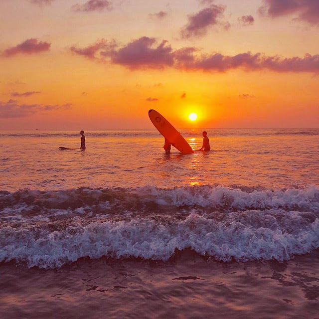
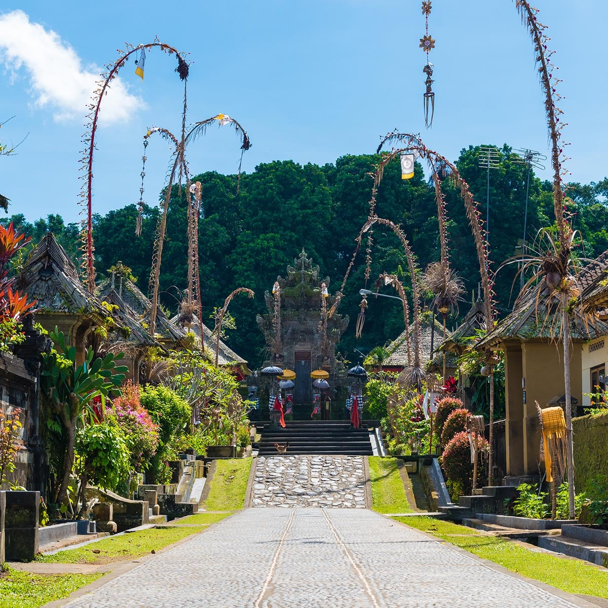
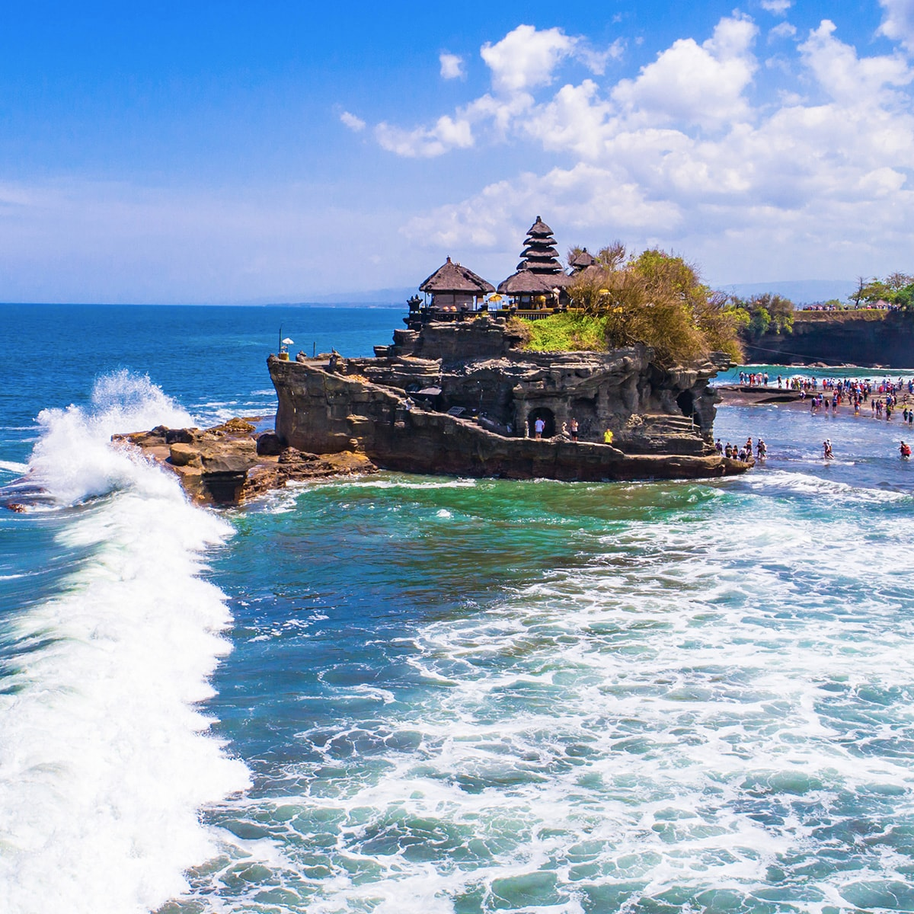

Pantai Kuta
Pantai Kuta adalah sebuah tempat pariwisata yang terletak di kecamatan Kuta sebelah selatan Kota Denpasar, Bali, Indonesia. Daerah ini merupakan sebuah tujuan wisata turis mancanegara dan telah menjadi objek wisata andalan Pulau Bali sejak awal tahun 1970-an.
Desa Penglipuran
Desa Penglipuran adalah salah satu desa adat dari Kabupaten Bangli, Provinsi Bali, Indonesia. Desa ini terkenal sebagai salah satu destinasi wisata di Bali karena masyarakatnya yang masih menjalankan dan melestarikan budaya tradisional Bali dalam kehidupan mereka sehari-hari.
Purah Tanah Lot
Pura Tanah Lot adalah salah satu Pura (Tempat Ibadah Umat Hindu) yang sangat disucikan di Bali, Indonesia. Di sini ada dua Pura yang terletak di atas batu besar. Satu terletak di atas bongkahan batu dan satunya terletak di atas tebing mirip dengan Pura Uluwatu.
Biodata
Tentang Saya:
Nama saya adalah Dina Mutia Azizah, lahir di kota Bogor, 14 Mei 2004, saya adalah anak terakhir dari 6 besaudara. Saat ini saya sedang menempuh pendidikan di univeristas STMIK IKMI CIREBON yaitu kampus yang berbasis komputer. Saya mengambil jurusan Sistem Informasi.
Hobby
- Nyanyi
- Rebahan
- Makan